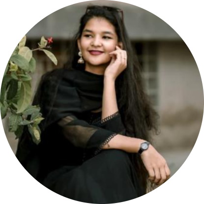
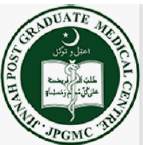

|  |
Dr. Syyeda Hibba UzairContact me mailto Download CV
> Medical Graduate from BUHS Karachi. Completed 5 years of medical studies from Bahria University of Health Sciences in Dec 2021. |
| 2017-2021: | MBBS from Bahria University of Health and Sciences (BUHS) Percentage: |
| 2014-2016: | Higher Secondary School Certificate from GOVT.DEGREE BOYS AND GIRLS COLLEGE SRE-III MAJEED, STADIUM ROAD, KARACHI 79.09% A (Pre- Medical) |
| 2012-2014: | Secondary School Certificate from National Grammar School, Karachi 85.29% A-ONE (Science) |
|  |
25-May’19 - 03-June’19
|
|
28-Jan’22 - 11-Feb’22
|
| iOS Development | ⭐⭐⭐⭐⭐ | Web Development | ⭐⭐⭐⭐⭐ |
| Photography | ⭐⭐ |